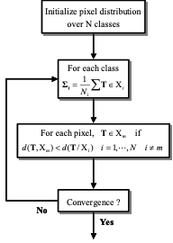
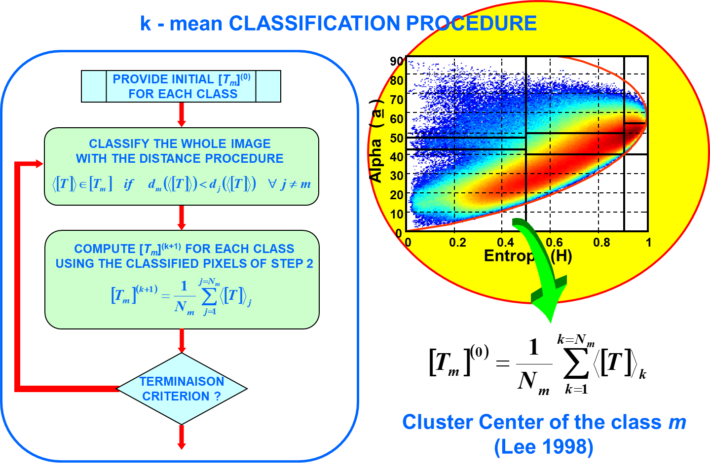
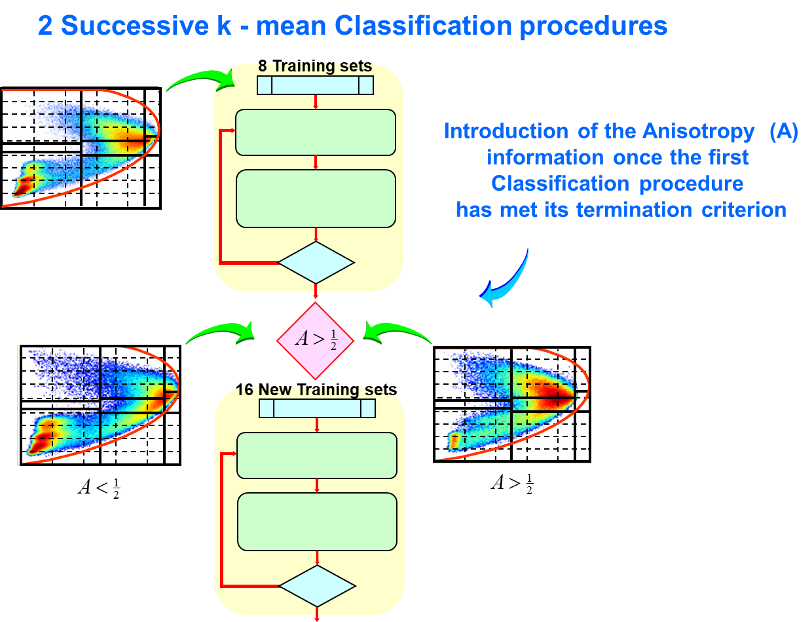

There is a great deal of interest in
the use of polarimetry for radar remote sensing. In this context, polarimetric
SAR data classification has been widely addressed in the 1990’s.
The tight relation between natural
media physical properties and their polarimetric features leads to highly
descriptive classifications results that can be interpreted by analyzing
underlying scattering mechanisms.
The objective of an unsupervised
classification process is to gather the complementary information contained in
polarimetric data in order to deliver highly
descriptive clusters as well as an interpretation of their characteristics.
The Wishart polarimetric
classification scheme performs a Maximum Likelihood (ML) statistical
segmentation of a polarimetric data sets based on the multivariate complex
Wishart probability density function of second order matrix representations.
An optimal segmentation necessitates
maximizing a global ML function over the entire polarimetric data set and
requires an unreasonable amount of time. A sub-optimal solution consists in
iteratively optimising this function using a k-mean
clustering algorithm. It is well known that such an algorithm may get stuck in
local minima and is then highly sensitive to the initialisation
conditions. It was found that an initialisation of
the different clusters using the results of the H-Alpha classification procedures
led to satisfying and stable results (J.S. Lee et al.).
A similar ML segmentation scheme
explicitly including Anisotropy related information may be built from the
Wishart statistics and led to improved segmentation results (E. Pottier et
al.).
● Polarimetric
SAR data statistics
It has been verified that when the radar illuminates an area of
random surface of many elementary scatterers, a target vector k
can be modeled as having a multivariate complex gaussian probability density
function of the form:, where q stands for the number
of elements of k, equal to three in the monostatic case, represents the determinant, and is the global 3x3 coherency matrix of the
target vector .
It has been shown that assuming that target vectors have a distribution, a sample L-look coherency matrix
follows a complex Wishart distribution with L
degrees of freedom, , given by:
with and where is the gamma function, and the trace of .
● Maximum
likelihood (ML) segmentation based on the Wishart distribution
A Maximum Likelihood (ML) segmentation process assigns sample
coherency matrices to the class represented by the coherency matrix of its
cluster center , maximizing its likelihood
function over N possible classes. This decision may be expressed under the
following form:
The ML assignment of a sample coherency matrix following a Wishart
distribution becomes:
with:
where corresponds to the global coherency matrix of
the cluster center evaluated over the class .
The joint likelihood optimization for all the sample matrices cannot
be performed in an easy way. Indeed, in the frame of an unsupervised
segmentation, the global coherency is built from the sample matrices belonging to
the class . An optimal solution would
consist in testing all the possible segmentations of a given number of sample
matrices into N classes. This optimal solution cannot be applied due to the
unrealistic computational load it requires.
In 1994, J.S. Lee et al. propose an alternative method, based on a
k-mean iterative clustering algorithm. At each iteration of the algorithm, a
sample coherency is assigned to the class according to the following decision
rule:
The statistical distance between the sample matrix and the class , , derives from the
Log-likelihood function and is given by:
This relation shows that if the number of look (L) increases, the a priori probability of the class does not play a significant role for the
classification. It is generally assumed that without a priori knowledge, the
different are equal, in which case the distance measure
is not a function of the number of look (L).
Thus, for each pixel, represented by its 3x3 coherency matrix , the distance is computed for each class, and the class
associated to the minimum distance is assigned to the pixel and, after
simplification, is given by:
The following figure depicts the unsupervised segmentation process
based on a maximum likelihood and using a k-mean clustering algorithm.

It is known that the initialization of the pixel distribution into N
classes is a critical stage of the k-mean clustering algorithm. An adequate
initialization permits a fast convergence and provides correctly segmented
clusters.
The convergence of the algorithm is evaluated by testing a condition
of termination. Such a criterion may be defined from the estimation of the
classification quality, or consist in a maximum number
of iterations or in a sufficiently low number of pixels that are differently
classified from one iteration to the other.
● The
combined Wishart – H / alpha segmentation
In 1998, J.S. Lee et al. proposed
an unsupervised classification method that uses the two-dimensional H / alpha classification plane to
initially classify the polarimetric SAR image.
The initial classification map defines training sets for
classification based on the Wishart distribution. This initialization provides
8 classes relating to the underlying physical scattering mechanism and giving a
stable initial approximation of the segmentation.
The classified results are then used as training sets for the next
iteration using the Wishart method. Significant improvement in each iteration
has been observed, and the analysis of the final class centers in the
two-dimensional H / alpha
classification plane are useful for interpretation of terrain types.
The polarimetric H / alpha
segmented image is used as training sets for the initialization of the
supervised Wishart classifier. The cluster centers of the coherency matrices, , is computed for each zone, with :
where Nm is the number of pixels in
the a priori class Each pixel in the whole image is then
reclassified by applying the distance measure procedure. The reclassified image
is then used to update the , and the image is then again classified
by applying the same distance measure procedure.
To classify similar objects in the same image, which can have
different orientation angles, the orientation dependence is removed from the
coherency matrix during the Wishart classification. The classification
procedure stops when a termination criterion, defined by the user, is met. The
termination criterion we used is the number of iterations and is here equal to
10. In this case, the ratio of pixels switching class with respect to the total
pixel number is smaller than 10%.
The following figure depicts the Wishart H / alpha unsupervised
maximum likelihood segmentation.

● The
combined Wishart – H / A / alpha segmentation
In order to improve
the capability to distinguish between different classes whose cluster centers
end in the same zone, the combined Wishart classifier is extended and
complemented with the introduction of the anisotropy (A) information which
indicates the relative importance of secondary mechanisms obtained from the
expansion of a coherency matrix.
This polarimetric indicator is particularly useful to discriminate
scattering mechanisms with different eigenvalue distributions but with similar
intermediate entropy values. In such cases, a high anisotropy value indicates
two dominant scattering mechanisms with equal probability and a less
significant third mechanism, while a low anisotropy value corresponds to a
dominant first scattering mechanism and two non-negligible secondary mechanisms
with equal importance.
This original method consists in comparing the anisotropy value of
all the pixels to ½. This comparison procedure leads to the definition of an
« equivalent » projection of the three-dimensional H / A / alpha space in two complemented H / alpha planes,
Among the different approaches tested, the best way to introduce the
anisotropy information in the classification procedure consists in implementing
two successive combined Wishart classifiers. The first one is identical to the
previous one. Once the first classification procedure has met its termination
criterion, the anisotropy comparison for all the pixels, is then introduced,
which leads to the definition of 16 new training sets used for the
initialization of the second Wishart classifier.

The entire unsupervised Wishart H / A /
alpha classification procedure is as follows :
1 : Apply
target decomposition to compute the entropy H
and alpha angle.
2 : First
initial classification of the image into 8 classes by zone in the two-
dimensional
H / alpha plane.
3 : For
each class, compute the initial cluster center [Tm](0) (k=iteration number
and m=1..8)
4 : Classify
the whole image using the distance measure procedure
5 : Compute
[Tm](k+1) for
each class using the classified pixels of step 4
6 : Return
to step 4, until a termination criterion defined by the user is met.
7 : Apply
target decomposition to compute the anisotropy A.
8 : Second
initial classification of the image into 16 classes by zone in the
projected
three-dimensional H / A / space, with :
9 : For
each class, compute the new initial cluster center [Tm](0) (k=iteration
number and m=1..16)
10 : Classify
the whole image using the distance measure procedure
11 : Compute
[Tm](k+1) for
each class using the classified pixels of step 10
12 : Return
to step 10, until a termination criterion defined by the user is met.
Improvements in classification and details are observed. Some
classes, indistinguishable in the classification based on entropy (H) and alpha angle (alpha) are now clearly visible with the introduction of the
anisotropy information. It is also possible to discriminate different areas,
belonging to the same scattering type (same entropy H and alpha angle) but
differentiated with the associated anisotropy information which is there
significative of the presence of several scattering mechanism types.
The introduction of the anisotropy in the clustering process permits
to split large segments into smaller clusters discriminating small disparities
in a refined way.
Books:
● Jong-Sen
LEE – Eric POTTIER, Polarimetric Radar Imaging: From basics to
applications, CRC Press; 1st
ed., February 2009, pp 422, ISBN: 978-1420054972
● Shane
R. CLOUDE, Polarisation: Applications in
Remote Sensing, Oxford
University Press, October 2009, pp 352, ISBN: 978-0199569731
● Charles
ELACHI – Jakob J. VAN ZYL, Introduction To The Physics and Techniques of Remote Sensing, Wiley-Interscience; 2nd edition (July 31, 2007),
ISBN-10 0-471-47569-6, ISBN-13 978-0471475699
● Harold
MOTT, Remote Sensing with Polarimetric
Radar, Wiley-IEEE Press; 1st
edition (January 2, 2007), ISBN-10 0-470-07476-0, ISBN-13 978-0470074763
● Jakob
J. VAN ZYL – Yunjin KIM, Synthetic Aperture Radar Polarimetry, Wiley; 1st edition (October 14, 2011), ISBN-10
1-118-11511-2, ISBN-13 978-1118115114
● Yoshio
Yamaguchi, Polarimetric SAR Imaging : Theory and
Applications, CRC Press; 1st ed., August 2020, pp 350, ISBN: 978-1003049753
● Irena
HAJNSEK – Yves-Louis DESNOS (editors), Polarimetric
Synthetic Aperture Radar : Principles and
applications, Springer; 1st edition (Marsh 30, 2021), ISBN
978-3-030-56502-2
● L.
Ferro-Famil, E. Pottier, J.S Lee, Unsupervised Classification of Natural Scenes
from Polarimetric Interferometric SAR Data in "Frontiers of Remote Sensing
Information Processing". C.H. CHEN. Chief Editor, Ed. World Scientific
Publishing, July 2003
ISBN 981-238-344-1
● L.
Ferro-Famil, E. Pottier, Radar Polarimetry Basics and Selected Earth Remote
Sensing Applications In “Academic Press's Library in Signal Processing”
collection. Volume 2 “Communications and radar Signal Processing”, S.
Theodoridis and R. Chelappa (Directors), N.
Sidiropoulos and F. Gini (Eds.), 4 October 2013, ISBN: 978-0-124-16616-5,
Academic Press.
Journals:
●
L. Ferro-Famil, E.
Pottier, J. S. Lee,
"Unsupervised classification of multifrequency and fully polarimetric SAR
images based on the H/A/Alpha-Wishart classifier", IEEE Transactions on
Geoscience and Remote Sensing, vol. 39, n°11, pp 2332-2342, November 2001.
●
L. Ferro-Famil, E.
Pottier, J.S. Lee,
"Classification and Interpretation of Polarimetric SAR data", IEEE
International Geoscience and Remote Sensing Symposium, June 2002, Toronto,
Canada.
●
J.S. Lee, M.R. Grunes,
R. Kwok « Classification
of multi-look polarimetric SAR imagery based on the complex Wishart
distribution» International Journal of Remote Sensing, vol. 15, No. 11, pp
2299-2311. 1994.
●
J.S. Lee, M.R. Grunes,
T.L. Ainsworth, L.J. Du, D.L. Schuler, S.R. Cloude, “Unsupervised Classification using Polarimetric
Decomposition and the Complex Wishart Distribution”, IEEE Transactions
Geoscience and Remote Sensing, Vol 37/1, No. 5, p 2249-2259, September 1999.
●
E.Pottier, J.S.
Lee "Unsupervised
Classification Scheme of POLSAR Images Based on the Complex Wishart
Distribution and the H/A/ Polarimetric Decomposition Theorem" 3th European Conference on Synthetic Aperture
Radar, EUSAR 2000, Munich, 23-25 May 2000.